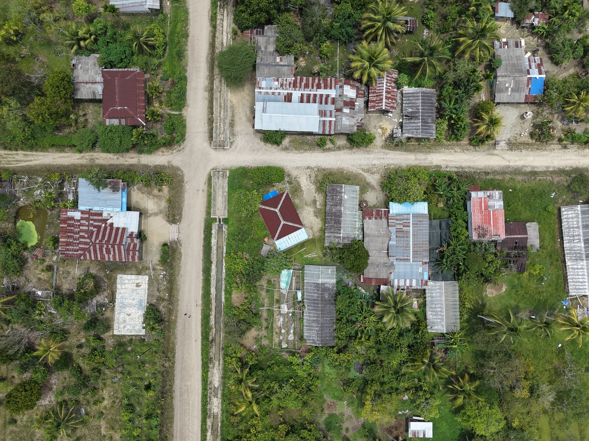

Tim Ekspedisi Patriot 1 Institut Teknologi Bandung
Kabupaten Jayapura · Papua
Profil Kawasan Lereh
Mengenal kehidupan masyarakat, potensi kakao, dan arah pengembangan agropolitan melalui data serta peta kawasan.
Angka di atas memiliki cakupan Distrik Yapsi, bukan ukuran khusus tapak pengembangan agropolitan.
Jelajahi Lereh
Kawasan, potensi, dan masyarakat
PROFIL LEREH
Profil Kawasan
Lokasi, sejarah, kondisi fisik, penduduk, dan infrastruktur.
PROFIL LEREHPotensi Komoditas
Kakao, sistem agribisnis, tabel komoditas, dan grafik LQ.
PROFIL LEREHPeta Kawasan
Jelajahi wilayah dan jaringan jalan pada peta interaktif.
PROFIL LEREHKelembagaan
Peran masyarakat, kerja sama antarpelaku, dan arah pengembangan.
Cerita dari kebun
Kakao dan masa depan petani muda

Kembali ke Yapsi, menekuni kakao
Dari pekerjaan di Abepura menuju kebun sendiri, Nindiron membangun penghidupan sambil terus belajar merawat kakao. Kenali kisahnya dan pengalaman Adam dalam berbagi pengetahuan dengan petani lain.
Baca cerita petaniJelajahi lebih jauh